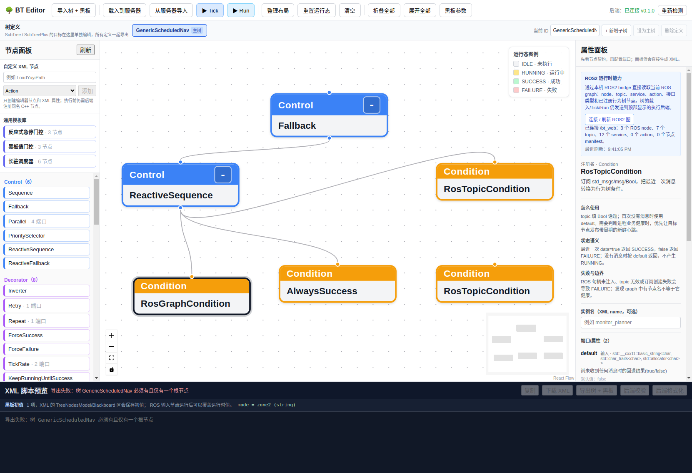

ROS2 能力与 5173 编辑器¶
这套系统把编辑器的树 API 与 ROS2 运行时发现拆成两个本机服务：
bt_server``（默认 ``http://127.0.0.1:8080）负责 XML 校验、载入、Tick 和 Run。bt_web``（默认 ``http://127.0.0.1:8088）通过rclpy加入 DDS，直接读取实时 ROS graph。
浏览器本身不能加入 DDS，因此仍需要一个本机 HTTP bridge，但用户不必手动维护它：
./scripts/dev.sh 会自动探测 rclpy，优先启动已安装的 bt_ros2，否则直接运行仓库
中的 bt_web.py。编辑器属性面板看到“当前没有 ROS2 图快照”通常表示 bridge 尚未启动、
ROS2 包和 Python 环境不可用，或 ROS_DOMAIN_ID 不一致。普通后端仍可用于控制节点、黑板和
XML 设计，所有 ROS 端口也仍可手填。
启动顺序¶
在仓库根目录显式构建 bt_ros2。不要直接使用不带 --base-paths 的
colcon build --packages-select bt_ros2，因为 colcon 会把顶层 CMake 项目识别成另一个包，
并停止继续发现内部的 ROS 包。
source /opt/ros/humble/setup.bash
colcon --log-base log_ros2 build \
--base-paths "$PWD/bt_ros2" \
--build-base build_ros2 \
--install-base install_ros2 \
--packages-select bt_ros2
source install_ros2/setup.bash
ros2 pkg prefix bt_ros2
启动执行器：
source /opt/ros/humble/setup.bash
source install_ros2/setup.bash
ros2 launch bt_ros2 bt_executor.launch.py \
tree_file:=$(ros2 pkg prefix bt_ros2)/share/bt_ros2/trees/recharge.xml
单独调试时可在另一个终端启动只读网关：
source /opt/ros/humble/setup.bash
source install_ros2/setup.bash
ros2 launch bt_ros2 bt_web.launch.py http_port:=8088
日常使用推荐从仓库根目录运行 ./scripts/dev.sh。它会自动托管 8088 bridge，并自动 source
仓库已有的 install_ros2/setup.bash overlay；只有单独
运行 Vite 或调试 bridge 时才需要上面的手动命令。若没有其他 ROS2 节点在相同
ROS_DOMAIN_ID 中运行，bridge 在线但 graph 为空属于正常结果。
dev.sh 其余部分保持 Bash 严格 nounset，但 source ROS/colcon setup 时会临时关闭该选项，
以兼容它们使用的可选变量 AMENT_TRACE_SETUP_FILES 和 COLCON_TRACE。用户不需要手动
执行 set +u。
验证能力消息：
curl http://127.0.0.1:8088/api/v1/bt/capabilities | jq
available=true 且 capabilities 非空时，bt_web 已完成一次 graph 读取。查看
ros_nodes、topics、services 和 actions 可确认当前 DDS 资源；manifests
来自在线 executor 的节点工厂目录，没有 executor 时可以为空。
快照只代表当前 graph：如果 executor 节点消失，bridge 下一次刷新会清掉旧的 manifests，
不会把已卸载的 Yuyi/ROS 插件继续当成可执行节点。ROS Action 的
send_goal/get_result/cancel_goal 内部 service 仅用于推导 actions，不会作为普通
services 候选显示。
在编辑器中配置¶
运行 ./scripts/dev.sh 后打开 http://127.0.0.1:5173。脚本会同时托管 ROS2 graph bridge；
编辑器固定通过
/ros-api/api/v1/bt/capabilities 代理本机 8088，右侧“ROS2 运行时能力”区域提供：
首次打开自动连接；bridge 离线时每五秒重试，成功后每三秒刷新；
“连接 / 刷新 ROS2 图”按钮、最近刷新时间以及 node/topic/service/action/manifest 统计；
bridge 不可达、graph 为空和 domain 不一致的明确诊断。
界面不提供可编辑 URL。部署到其他主机时由运维配置 Vite 的 BT_ROS_WEB_URL，而不是把
基础设施地址写进树或浏览器草稿。稍后启动 bt_web 时无需重载页面；所有动态候选仍允许
手工修改，因为 ROS graph 会变化。
如果只想启动普通编辑器，可运行 BT_ROS_WEB_MODE=off ./scripts/dev.sh；如果希望 ROS bridge
不可用时直接让脚本失败，可运行 BT_ROS_WEB_MODE=on ./scripts/dev.sh。
动态候选与节点用法¶
候选来源由节点 manifest 的 editor_hint 决定，不按端口名猜测，也不包含 Yuyi 业务白名单：
ros_node/ros_topic/ros_service/ros_action对应固定资源类型；ros_graph_entity根据同一节点的entity_type在四类资源间切换；旧 executor 快照没有
services/actions时，网关和编辑器补空数组，不返回 500。
默认 RosGraphCondition 可以检查资源是否存在：
<RosGraphCondition entity_type="node" entity_name="/planner"/>
<RosGraphCondition entity_type="service" entity_name="/planner/reset"/>
<RosGraphCondition entity_type="action" entity_name="/navigate_to_pose"/>
存在返回 SUCCESS，不存在返回 FAILURE；反向条件使用 Inverter。DDS graph 发现
不是健康检查，生产故障检测仍应优先使用带 timeout_ms 的周期心跳 topic。
Yuyi 常见的无参数命令和布尔开关可直接使用两个非阻塞 service 节点：
<CallTriggerService service_name="/sweeper/up/lower"
timeout_sec="2.0"
message="{lower_response}"/>
<CallSetBoolService service_name="/sweeper/up/enable"
data="true"
timeout_sec="2.0"
message="{enable_response}"/>
它们等待 service 或响应时返回 RUNNING，响应 success 决定终态，message 写入黑板；
超时或 halt 会清理 pending request。其他 service/action 消息必须用编译期类型实现插件节点，
但同样可以通过 manifest hint 获得动态名称候选。
对于尚未注册到当前 executor 的 Yuyi 节点，选中“自定义 XML 节点”后可在属性面板声明
typed 端口。例如 LoadYuyiPath 可以声明 path_file``（输入、``string）和 path
（输出、项目路径类型），再把输出绑定为 {route_path}。这会改变编辑器控件、黑板提示和
配置包中的 editor_manifests，但不会伪造 ROS2 执行能力；真正插件仍必须用同名
providedPorts() 注册端口并实现 ROS 句柄、异步状态、超时和 halt()。
原始 XML 保持标准执行格式，只保存节点属性和 TreeNodesModel/Blackboard；跨机器迁移时
使用“导出树 + 黑板”配置包即可同时恢复 XML、黑板初值、多树定义和自定义端口契约。若当前
executor 已发布同名 runtime manifest，运行时 manifest 优先于包内旧的编辑器声明。
如果 /api/nodes 暂时不可达，节点面板不会被清空，而是进入“仅设计”降级模式：
Sequence、Fallback、Parallel、常用装饰器以及 SubTree/SubTreePlus 仍可
拖入画布，自定义 XML 节点也仍可手动添加。此时只能下载/复制 XML；载入、Tick、Run 仍要等
树后端恢复，运行期端口和节点说明以之后返回的 runtime manifest 为准。
设计边界¶
能力快照只描述“当前运行时能看到什么”和“executor 注册了什么”，不会凭接口名称自动生成
任意消息类型的 C++ 行为树节点。发现 custom_msgs/msg/Status 后，仍需要实现并注册一个
真正的节点，再由 executor 运行。普通 bt_server 也不能执行依赖 rclcpp 的节点：
5173 编辑器
├── /api/* -> 8080 bt_server（编辑/普通节点执行）
└── /ros-api/* -> 8088 bt_web（ROS2 能力发现，只读）
包含 ReadScalar、IsFlagTrue、RosTopicAction、service 动作或自定义 ROS 节点的最终 XML，应由
BtExecutorNode 加载和 Tick。当前 bt_web 不提供 /api/tree/load、/api/tree/run；
要做到单地址的编辑、载入和运行，需要后续实现 ROS-aware editor backend，并复用同一套
/api 契约，而不是把只读网关冒充成执行后端。
Yuyi 大树当前覆盖范围¶
编辑器可以直接导入并继续设计用户给出的多树 XML，但“可显示”和“可执行”必须分开判断：
已原生支持结构：
Sequence、Fallback、Parallel、Inverter、ForceSuccess、多BehaviorTree、SubTreePlus映射和 XML 黑板初值。已提供通用 ROS2 节点：
RosGraphCondition、RosTopicCondition、RosTopicAction、ReadScalar、ReadBattery、IsFlagTrue、CallTriggerService和CallSetBoolService。LoadYuyiPath、FollowPath、ObstacleSpeedLimiter、DetectCurrentMapZone、RunOnZoneTransition、TimeCondition、KeepRunningUntilFailure、NonBlockingDelay和CleanupWorkToolsOnHalt等业务标签仍需 Yuyi ROS2 插件实现并注册。
未知节点可通过“自定义 XML 节点”选择 Control/Decorator/Action/Condition 并添加任意 XML
属性，前端不会写死 topic、service 或 Yuyi 字段。该类别只决定画布连线约束；真正的端口、
RUNNING/超时/halt() 语义和执行能力必须由 C++ manifest 与注册类型提供。
故障排查¶
HTTP 500 @ /ros-api/...：Vite 代理连不到 8088；优先重新运行./scripts/dev.sh，它会 自动托管 bridge。只有单独运行 Vite 时才手动启动bt_web，并检查端口和进程日志。Package not found: bt_ros2：只 source 了/opt/ros/humble，没有 source 仓库 overlay。 执行source install_ros2/setup.bash，或者从仓库根目录重新运行./scripts/dev.sh。bridge 启动脚本会把完整日志写入
/tmp/bt_ros_web.log，也可通过BT_ROS_WEB_LOG_FILE=/path/to/bridge.log指定。日志中的Operation not permitted通常 表示运行环境禁止 DDS/HTTP socket，不是 ROS graph 为空。available=false：bridge 尚未完成第一次 graph 读取；若持续出现，检查bt_web日志。有 topic/service 但没有预期 ROS 节点：能力快照来自另一个 domain 或 executor，检查两个终端的环境变量。
候选存在但载入失败：发现能力和执行后端不是同一个进程；把 XML 交给 ROS2 executor，而不是 普通
bt_server。
bt_web 的结构观察器与 C++ 执行器使用同一套子树展开顺序；SubTreePlus 会按目标
BehaviorTree 展开，Yuyi 的 RunOnZoneTransition 等未知标签则按子节点数量保留为
Control/Decorator 结构，而不会被错误压成不可展开的叶子。它只用于显示，不替代执行器的
端口和状态契约校验。
为什么 ROS graph 必须经过 bt_web¶
常见疑问：为什么编辑器不直接读 ROS graph，还要多一个 bt_web 进程？
这是**刻意的架构约束**，不是实现偷懒：
bt_server是纯 C++ / cpp-httplib 进程，完全不链接 rclcpp。可用ldd build/bin/bt_server | grep -c rclcpp验证，结果为0。它不知道 ROS 是什么， 因此GET /api/v1/bt/capabilities硬编码返回{"available":false,"capabilities":null}， 宁可明确降级也不伪造 node/topic 数据。只有
bt_web``（Python + ``rclpy）能加入 DDS 并调用get_node_names_and_namespaces()/get_topic_names_and_types()/get_service_names_and_types()。浏览器同样不能加入 DDS，所以必须有一个本机 HTTP bridge 把 graph 暴露出来。
这个分工的收益是：没有安装 ROS2 的机器上，编辑器依然能用——控制节点、装饰节点、
黑板和 XML 设计全部可用，只是 ROS 端口需要手填而非下拉选择。若把 rclcpp 链进
bt_server，就会丧失这一能力。
如果确实需要单进程方案，正确做法是让本身就是 rclcpp 节点的 bt_executor
额外提供 HTTP 端点，而不是给 bt_server 增加 ROS 依赖。
graph 数据形状陷阱（已修复）¶
rclpy 的 get_topic_names_and_types() 与 get_service_names_and_types() 返回
``list[tuple[str, list[str]]]``，而不是 dict：
>>> node.get_topic_names_and_types()
[('/nav3d/current_pose', ['geometry_msgs/msg/PoseStamped']), ...]
bt_web_core._interface_list() 早期只接受 dict，导致真实 graph 的 topic/service 被
静默丢成空列表——编辑器显示 N 个 ROS node、0 个 topic、0 个 service，明显自相矛盾
（有节点却没有任何话题）。现已修复为同时接受 list 与 dict 两种形状，并补充回归测试
test_builds_capabilities_from_rclpy_list_shape。
备注
排查此类问题的判据：ROS node 数量非零但 topic/service 全为 0。任何活着的 ROS2
节点至少会暴露 /parameter_events、/rosout 和参数服务，因此全零一定异常。
反之 0 个 action 通常是正常的——环境里确实没有 action server 时就该是 0，可用
ros2 action list 交叉确认。
{kind=link}

修复后属性面板的 ROS 端口可以直接从实时候选中选择，无需手敲话题名。
ROS2 节点都是叶子节点¶
所有 ROS2 适配节点都不能挂子节点。 它们的 manifest type 只会是 Action 或
Condition，即行为树中的叶子；XML 解析器会拒绝给叶子添加子元素。
<!-- 错误：Condition 是叶子，解析器报错 -->
<RosGraphCondition entity_type="node" entity_name="/planner">
<SubTreePlus ID="WorkRoute"/>
</RosGraphCondition>
<!-- 正确：条件与动作作为兄弟节点，由控制节点组织 -->
<ReactiveSequence>
<RosGraphCondition entity_type="node" entity_name="/planner"/>
<SubTreePlus ID="WorkRoute"/>
</ReactiveSequence>
要"在 ROS 条件之后接另一棵行为树"，用 Sequence / ReactiveSequence / Fallback
组织，并用 SubTree 或 SubTreePlus 引用目标树。可用如下命令随时确认某节点能否
拥有子节点：
curl -s http://127.0.0.1:8080/api/nodes \
| python3 -c "import sys,json;[print(f\"{x['registration_name']:24} {x['type']}\") for x in json.load(sys.stdin)]"
Control 可有多个子节点，Decorator 恰好一个，Action 与 Condition 不可有子节点。